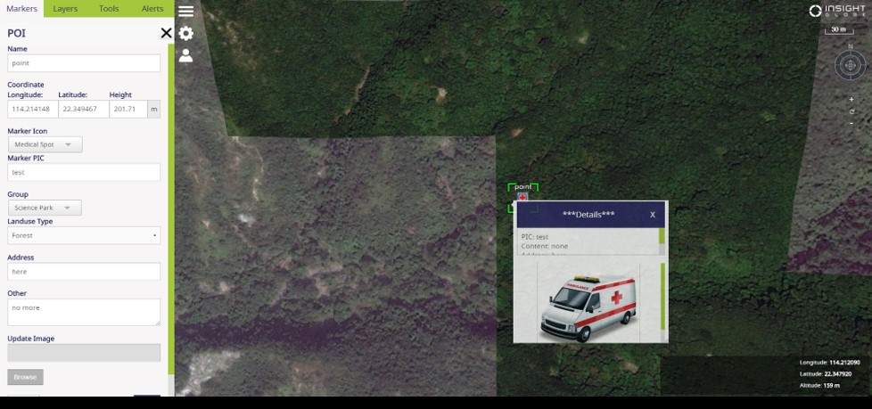
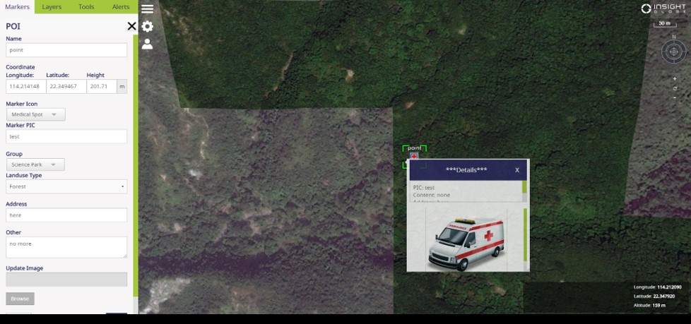

- Current Projects
GOGOVAN
Established in 2013, GOGOVAN is the first app-based platform for delivering goods in Asia, which is dedicated in offering excellent delivery service through innovative technology. Since then, GOGOVAN has extended its service to various platforms. The company connects individuals and businesses directly to thousands of drivers for their real-time delivery needs, and redefines the everyday delivery experience by providing a convenient and efficient service. Over the years, GOGOVAN has expanded its business from Hong Kong to Singapore, South Korea, Mainland China, Taiwan and India and will continue to expand globally. In August 2017, GOGOVAN merged with 58 Suyun, the leader in Mainland China’s intra-city logistics market, and increased GOGOVAN’s presence to over 300 cities, with more than 8 million registered drivers under its network.

WiFi big data analysis in Macau
In this project, we focus on the five phases of the WiFi big data in Macau, i.e., data storage, data mining, data analysis, strategies and visualization. We utilize WiFi big data to: 1) categorize resident, commuter and tourist into groups, and then model spatiotemporal trajectories of tourists for semantic mining; 2) identify characteristics and preferences of different individuals and groups; 3) understand the experience of tourists in real-world tourism activities, and Virtual space experience through WiFi connection; 4) Develop personalized travel recommendation service and management system based on Internet geographic information. We finally make a geodatabase to support Web GIS and data mining, a Web GIS-based platform for visualization and analytics and data mining algorithms to provide a customizable solution.

Wildfire Detection System
This project aims to develop a versatile, user-friendly, highly integrated data and analytical Geomantic Information System (GIS) software platform for disaster monitoring, analysis and prediction. To achieve the objective above, the project team will leverage on the combined expertise from Hong Kong Polytechnic University (PolyU) in GIS, spatial data analysis algorithm and modeling together with the advanced natural resource monitoring technology from Insight Robotics comprising robotics control and UAV system in aerial survey. The desired outcome is a platform to improve decision making through disaster monitoring using multi-directional visualization system incorporating various data overlay to enable visualization in a multi-factored reality; & disaster prediction based on trends generated from data mining and fusion combined with spatial data analysis/modeling algorithms.
 
- Past Projects
Automatic Ice Navigation Support System in the Arctic Sea
This project aims to develop an automatic ice navigation support system. We propose a virtual road-like-graph in the sea that is built based on the delineation of navigable sea areas and unnavigable sea ice regimes or obstacles. We apply the Dijkstra shortest path algorithm and adopt the visual analytical Isovist method, and then we develop an integrated analytical GIS package, which we call NavSpace. NavSpace is an open source GIS project that is available for extension and validation in related ice studies. By applying the NavSpace to GIS vector-formatted ice data from the Canadian Ice Service, we demonstrate how the GIS-based ice navigation support system allows us to: (1) assist automatic ship route planning; (2) automatically identify navigable sea areas in case that emergency situations may begin to occur; and (3) interactively map for the purpose of higher visual and analytical navigation services. As a result, an automatic ice navigation support system may be achieved in real time at an operational level.
Download AxialGen 1.0 client edition (contact bin.jiang AT hig.se for user name and password, due to copyright concerned)
For a quick starter, follow the video clips. (best view in a full-screen mode)
Now AxialGen 1.0 client edition is able to process up to a few hundreds of buildings or street blocks.
For more details about AxialGen, refer to Jiang B. and Liu X. (2010), Automatic generation of the axial lines of urban environments to capture what we perceive, International Journal of Geographical Information Science, 24.4, 545-558, Preprint, arxiv.org/abs/0811.4489.